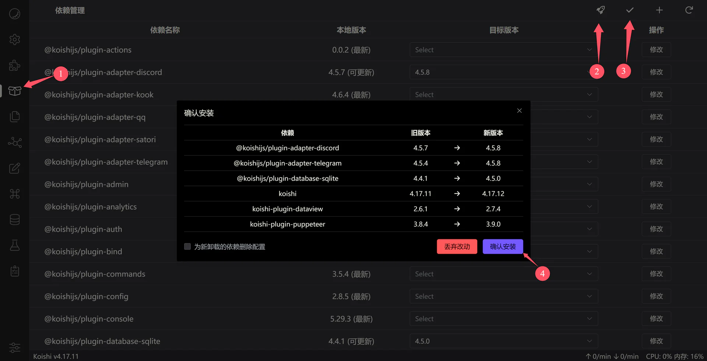
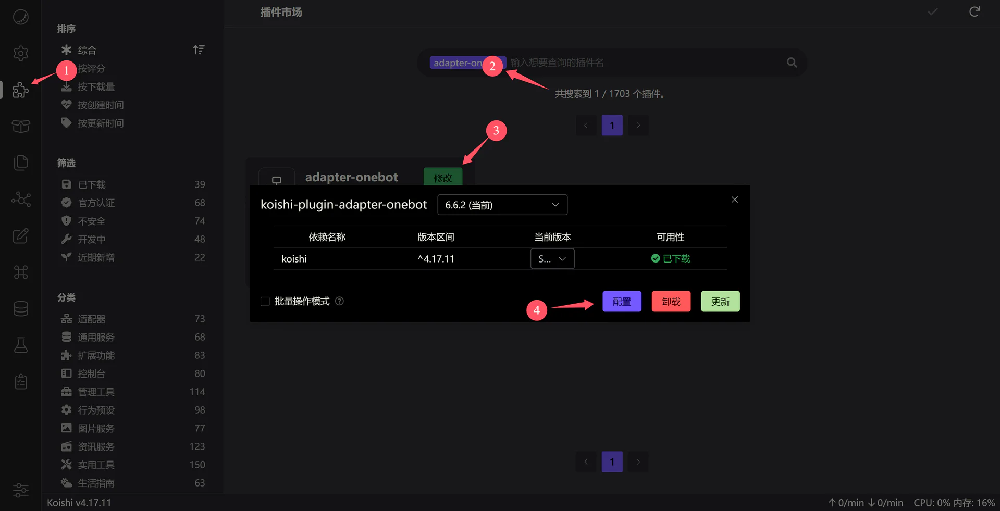
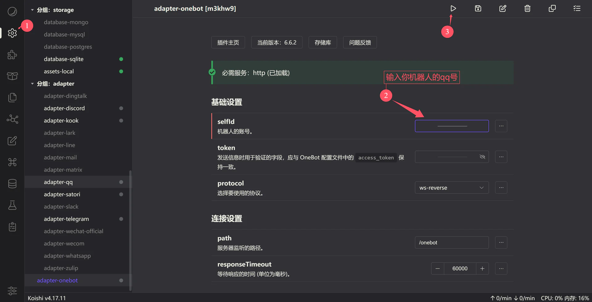
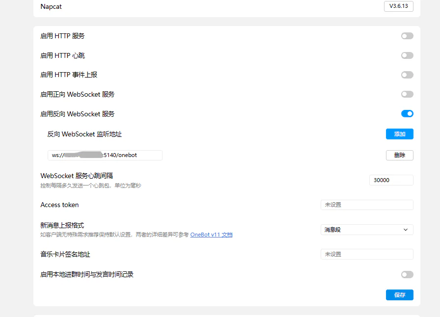
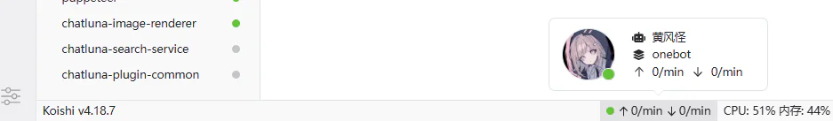
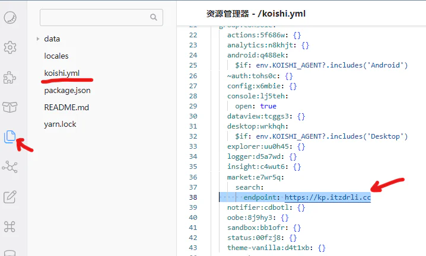
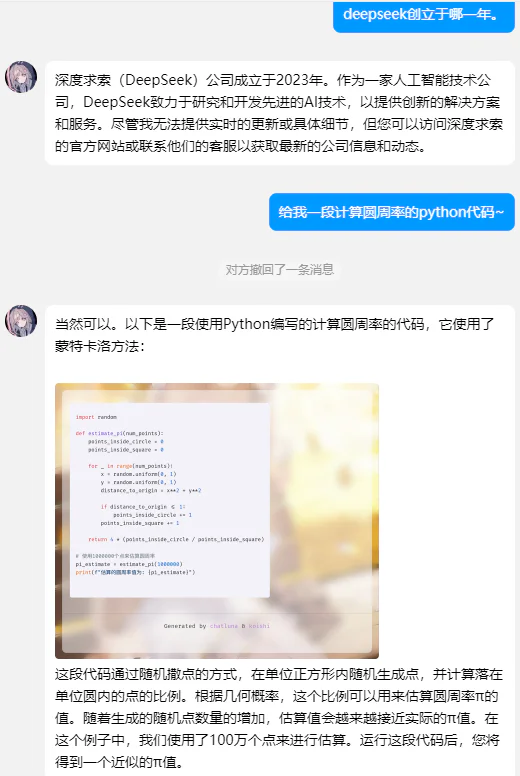

QQ机器人¶
约 615 个字 -11 行代码 10 张图片 预计阅读时间 2 分钟
qq官方是禁止此类个人账号接入机器人的，所以有封号风险，大家别拿大号玩¶
记录一下用阿里云+linux qq+napcat+koishi+ChatLuna实现用qq小号接入deepseek聊天的过程，之前其实也用过chatgpt的api，但是国内的服务器设置梯子还是不太稳定，clash运行了两个月崩了，国内api还是方便呀。由于我也是业余所以教程都是别人的（
前一半教程实际上来自丫丫博客
###工具：
安装docker¶
ssh连接上服务器
修改docker镜像源¶
用阿里云的话，有阿里云的镜像加速器：容器镜像服务-镜像加速器
安装NapCatQQ¶
docker run -d \
-e MESSAGE_POST_FORMAT="string" \
-e WSR_ENABLE=true \
-p 6099:6099 \
-v /root/napcat/config:/usr/src/app/napcat/config \
-v /root/napcat/.config:/root/.config \
--name napcat \
mlikiowa/napcat-docker:latest
<服务器公网IP>:6099, 若出现”{“msg”:”NapCat WebAPI is now running!”}“即代表成功
登录QQ¶
浏览器访问 <服务器公网IP>:6099/webui，需要输入token
在ssh使用命令docker logs napcat | grep WebUi, 找到类似于[NapCat] [WebUi] WebUi Local Panel Url: http://127.0.0.1:6099/webui?token=xxxxxxxx的记录，最后一串就是token
复制并输入进webui，手机qq小号扫码登录
此时在ssh使用命令docker attach napcat (napcat是这个docker的名字)可以看到一大堆滚动的消息记录，因为刚登录qq会接收近期消息
安装Koishi，一个聊天机器人框架¶
运行
安装成功显示“欢迎使用 Koishi！ ......在您点击[同意]前，telemetry服务不会启动。”这里使用–network host模式的docker是让docker和宿主机使用相同的网络栈，后面如果需要配置梯子，比如用linux端Clash，比较方便
浏览器访问<服务器公网IP>:5140，进入koishi的webui，点击同意
安装并配置qq所需的koishi插件¶
点击“依赖管理”，然后点击小火箭，再点勾，再点击确认安装

随后点击“插件市场”

在插件市场里搜索adapter-onebot，而后待添加并安装。onebot是一个聊天机器人的开源接口协议，NapCat应该属于其中的一种。

安装之后koishi会刷新一下，再进入插件市场，点击刚才的插件，点击“配置”
 
如图配置，输入qq号，protocol选择ws-reverse，path为/onebot
配置NapCat¶
启用反向WebSocket服务，反向Websocket监听地址为ws:///<服务器公网ip>:5140/onebot

此时若一切正常，使用docker attach napcat后不会有error，否则日志会显示napcat会不断尝试连接反向Websocket；
以及在koishi的webui的右下角会亮绿灯，且能看到自己qq头像：

这步之后，Koishi就能向napcat发消息，napcat就会用qq小号输出来自Koishi的消息。
一个简单的测试¶
给koish安装并启用另一个插件，advanced-echo
向qq小号发送 aecho 1 [测试字符串]，若功能正常，会回复 [测试字符串]，如下图：
后面的基本就来自于koishi和ChatLuna官方文档了
获取deepseek api key¶
在deepseek API开放平台购买并创建API key 复制粘贴API key到一个文档里，api key只显示一次
安装koish插件：chatluna和chatluna-deepseek-adapter¶
插件配置参照官方文档 将刚才的api放入chatluna-deepseek-adapter的配置-请求选项内 注意如果插件商城里搜不到deepseek-adapter，可能需要换源，如下图

换源后可能需要重启一下koishi：docker restart my_koishi
如果上述哪个步骤做崩了可以docker ps, docker stop, docker rm来重新安装
这俩插件安装配置好后，就可以聊天了
效果¶
加了chatluna-image-renderer后还可以渲染代码块为图片~
